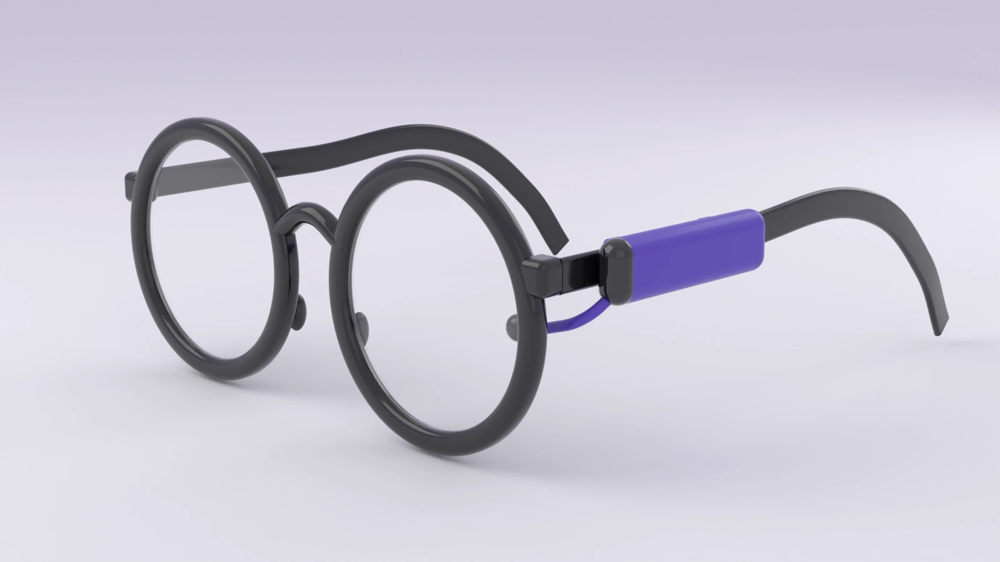
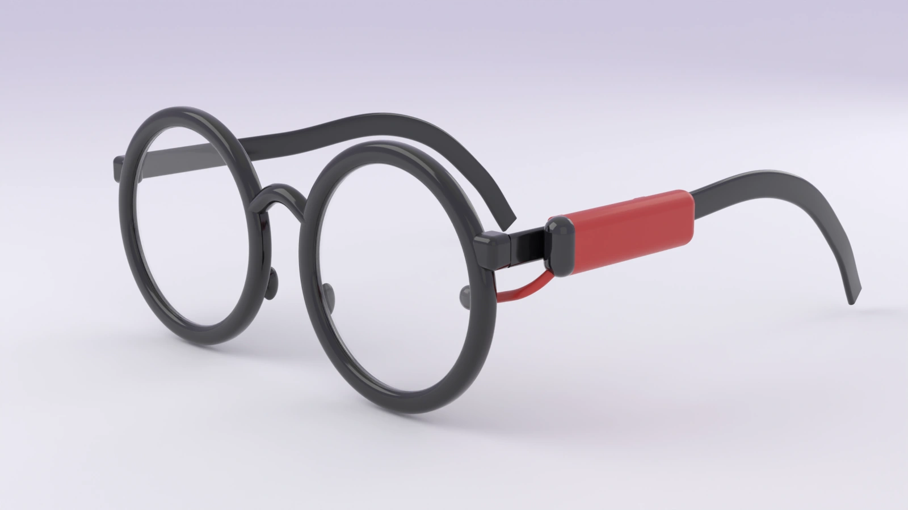
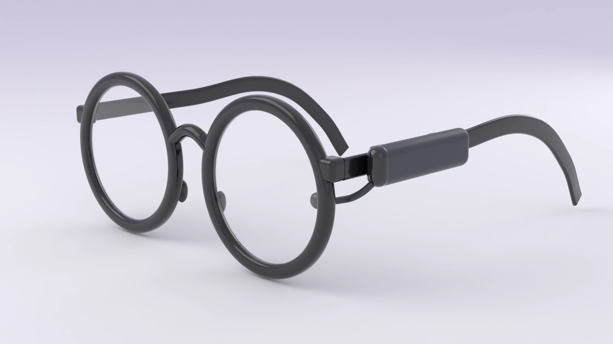
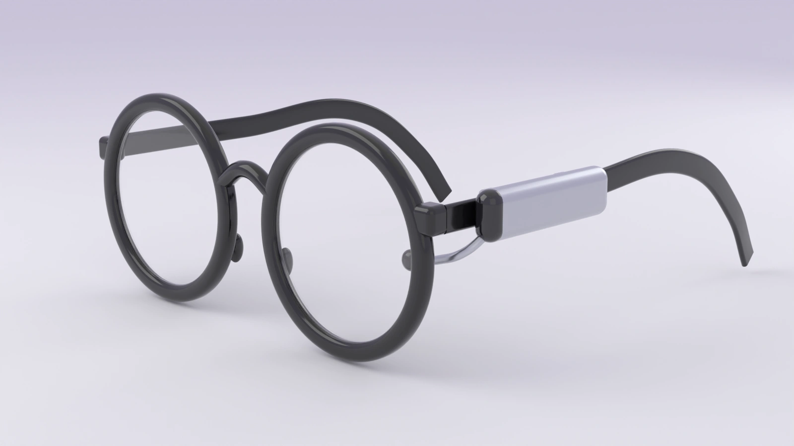
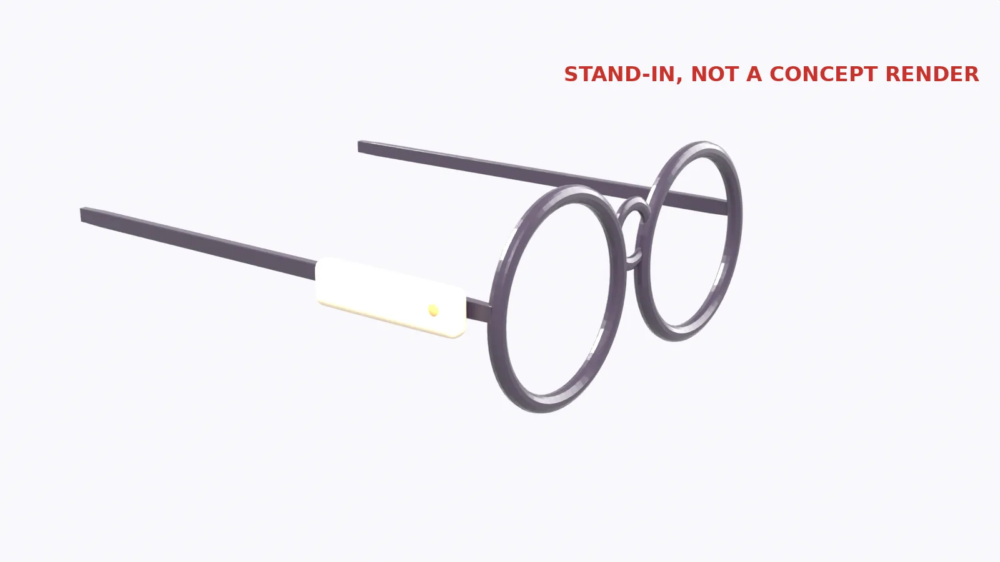

What is in the pod.
One sensor, one battery and a clip. Nothing else to wear.





Concept render
What is in the pod.
One sensor, one battery and a clip. Nothing else to wear.
The details so far
Why Palpera
-
Keep your own frames
No new prescription and no new look. The pod clips to the temple of the glasses you already own.
-
No camera, ever
Palpera senses blinking with a tiny infrared sensor. It cannot take pictures of you or anyone around you.
-
A nudge, not a dashboard
You do not need another score to check. Palpera stays quiet until your eyes are due a break.
How it works
-
Step one
Clip it on
The pod sits on one temple of your glasses, with a short arm that reaches toward the lens.
-
Step two
It follows your blinking
Long stretches at a screen change how often and how fully you blink. The sensor picks that up as you work.
-
Step three
It tells you when to rest
When your eyes have gone too long without a break, the Palpera app on your iPhone lets you know.
Where we are
Palpera is in early development. The first prototypes are being built and tested now, and nothing is for sale yet.
The pod comes first. A Palpera frame with everything built in is planned for later. We will share real results here as soon as we have them.